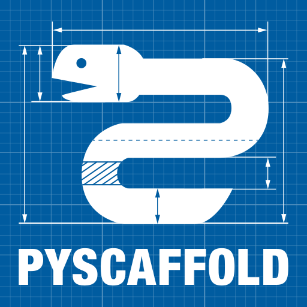

工具是實作手段，流程與治理才是主線
供已看過五月版的人查核選型：基本導入、未來導入與可選導入分開看；日常操作請回到前面的開發者旅程。



Ref. Official project repositories linked above; logo assets from each project's brand kit.
Innoguard-Cyber-Arch / repository infrastructure
csarc-repo-template
Cyber-Arch 的可更新 repo 公版：建立新案、導入既有案、接收政策更新，都先驗證再由 PR 合併。
本頁是技術決策附錄，服務對象是想理解「為什麼這樣設計」的人；一般使用者的快速上手與導入指令請見 repo README。
建立時必選｜四種組合只要 CI/CD 基線、Python、TypeScript，或兩者都有；宣告會寫入 repo 並由檔案自動核對。
四種組合共用可選 Story Milestone、Issue／spec、PR checks、安全檢查、單一 SemVer 與 Copier 更新；建立時另選 main-only 或有測試環境的 dev 模式。
版本基線Python 3.14；TypeScript 採 Node 24 Active LTS。Go／Rust 仍是 future，不先建立空設定。
公版會替 repo 準備
規劃與 AI 契約可選 Story Milestone → 1..N Issues → 各自 PR；spec 可同步 Issue 或 Story
驗證與合併./scripts/verify＋CI＋PR；依環境選 main 或 dev
依賴與交付證據新版先等三天；OSV 查已公開漏洞；checksum 驗檔案一致；SBOM 列成品套件
可持續同步公版更新成為可審查差異，不會直接覆蓋產品程式
依你現在的 repo 狀態開始
新 repo
選語言與分支模式；需要端到端 story 時先建 Milestone，再由 Issue 進 PR。
既有 repo
在導入分支保留舊債邊界，逐項解決衝突與門禁。
已使用公版
指定已審查的公版 SHA，只審查本次版本差異。
開始前必裝Git、GitHub CLI、uv；TypeScript／混合案另需 Node 24+、pnpm 11。純本機驗證不用 token；套用 GitHub 設定與端到端測試前才登入 gh。
一張圖看懂：程式怎麼從需求走到可交付版本
CI 是 PR 上的自動檢查與回饋；CD 是合併後建立可追溯版本與成品。01–06 跟著工作走，07–10 在底層維持整套流程。
定義工作
用 Issue 說清楚問題與完成條件，其餘選填寫進補充。
實作與測試
人或 AI 依 AGENTS.md 修改，先在本機驗證。
提出 PR
連回 Issue，說明目的、測試與回退方式。
自動檢查
跑格式、型別、測試、打包與依賴風險檢查。
審查與合併
修到檢查通過、同事核准，再進 main 或 dev。
版本與交付
建立 SemVer、artifact、checksum 與 SBOM；部署另訂。
07規則治理
權限、分支與合併規則一致。
08模板升級
用 Copier 把政策更新帶回 repo。
09內部網站
讓做法、限制與決策容易查找。
10導入層級
基本先做；條件成熟再加進階能力。
模板會把這些工程基礎設施放進你的 repo
先選 CI/CD-only、Python、TypeScript 或兩者；共用 GitHub 層不變，只有所選語言的工具與產品目錄會出現。
步驟 2｜先定 AI 契約，再開始實作
基本導入。AI 先讀工作單、repo 與 AGENTS.md，再提出做法、修改、測試；人保留方向、風險與合併責任。
問題與目的｜只給一句 prompt，AI 會猜範圍；多個可寫 agents 共用 working directory，未提交變更與 branch checkout 也會互相干擾。契約要短、可執行，且不能取代人的判斷。
不靠長提示詞，也不讓 agents 共用目錄
- 同一 working directory 切 branch：未提交變更與 checkout 會互相干擾
- 複製全部 coding style：容易與 Ruff／Biome 分歧，固定判定應交給 CI
- AI review 當必要門禁：結果會漂移，不能取代測試、同事審查與 Ruleset
標準 AGENTS.md＋就近覆寫
agentsmd/agents.md｜MIT｜公開且持續維護；格式就是一般 Markdown。
熱門實例：VS Code 根檔 5 行、uv 25 行、Kubernetes 36 行；Next.js 558 行反映大型 monorepo，而不是每案都該追求的長度。
官方行為：Codex 會由根目錄往工作目錄合併指令，越靠近目前檔案的規則優先。
Ref. OpenAI Docs; agentsmd/agents.md repository.
工作契約：六段涵蓋範圍、工作迴圈、指令、修改界線、安全與審查；依語言只列真正存在的指令，根檔最多 200 行。
平行隔離：每項可寫任務使用自己的 branch 與 Git worktree；只平行處理互不依賴的範圍。原生 Git 是基線，Worktrunk 是選用的本機輔助，不進入生成 repo 相依。合併後由建立者執行 scripts/cleanup-worktrees，只回收 GitHub 已驗證合併且乾淨的 worktree。
人類負責：確認需求與技術方向、判斷風險、審查差異；唯一的 CI 例外是 human 已確認 Actions 免費額度耗盡時，agent 對 PR HEAD 完整本機驗證、留存 SHA-bound 聲明並取得一次性合併授權。Ruleset、CODEOWNERS 與供應鏈控制不因此失效。
先辨識 GitHub 方案，再套用真的能生效的管制
基本導入｜同一份公版依 Free、Team、Enterprise 與實際 API 能力調整；不把付費功能假裝成已啟用。
目前實測｜Innoguard-Cyber-Arch API 回報 Free＋private；因此 main 現在確實沒有強制保護，CI 紅燈仍可能被有權限者繞過。
Free 目前
提出審查要求，強制能力降級：governance workflow 會從 .github/REVIEWERS 輪派一位非作者 reviewer；private repo 只把期望 Ruleset 保留在 policies/rulesets.json，因為 REST 與 GraphQL 建立 API 都會拒絕。check 標示 DEGRADED，CI 與 release 照常執行。
- 一位設定的同事會收到 review request，但 team request 與 merge gate 仍不可用
- CI 與留言提供紀錄，但無法取代 merge gate
Team 最低建議
再加上：private repo Ruleset、protected branches、強制核准、CODEOWNER 與必要檢查。
- 同一個 CODEOWNERS team 必須存在並有 repo write access
- 公版即可套用現有 repo Ruleset
Enterprise 組織級
再加上：SAML SSO／SCIM、internal repo、private/internal 部署保護、私有 Pages、稽核串流與 IP 限制。
- 組織／Enterprise Ruleset 可集中治理
- 目前只偵測並提示，不自動改組織設定
| GitHub 方案與可見性 | apply 結果 | check／PR／CI/CD 行為 |
|---|---|---|
| Free＋public | 透過 REST 套用並啟用 Ruleset | 驗證 main 的有效規則；缺少或不符即失敗 |
| Free organization＋private | 套用基本設定，並把期望 Ruleset 保留在 policies/rulesets.json；公開 API 無法建立 Ruleset | 從設定名單輪派一位個別 reviewer，並標示 DEGRADED；team request、紅燈或未核准都不能成為 merge gate |
| Pro 個人帳號＋private | 套用並啟用 Ruleset | 與 Free public 相同 |
| Team／Enterprise organization＋private | 確認 CODEOWNERS team 後套用並啟用 Ruleset | 必要審查、CODEOWNER 與 status checks 成為 merge gate；不符政策時 fail-closed |
Ref. GitHub plans；About rulesets. Accessed August 21, 2026.
步驟 3｜本機與 CI 用同一把尺
基本導入。本機保留完整驗證入口；一般 Issue PR 跑單一 runtime 的 change-aware checks，promotion／hotfix 才跑完整矩陣。
問題與目的｜若每個人和 AI 都用不同指令，結果就無法重現；統一成一個驗證入口，問題可在送出 PR 前發現。
這次不選，因為會出現兩套標準
- 只靠 IDE／pre-commit：本機可跳過，不能作合併證據
- 每個 workflow 重寫指令：本機綠燈不代表 CI 會綠
- ESLint＋Prettier：TypeScript 基線先用一份 Biome 設定，減少重疊
- Python flat layout：測到原始碼，不是真正會發布的成品
Python：uv／Ruff／mypy／pytest TS：pnpm／Biome／Vitest
Fast：每張一般 PR 跑 secret scan、格式、lint、型別、單元測試與必要 template smoke；docs-only 不啟動語言或生成矩陣。
Full：dev/* → main promotion、hotfix、merge queue 與手動 dispatch 才執行全部 runtime、profiles、Copier update、release 與安全回歸。
條件式供應鏈：workflow 變更加跑 Zizmor，相依變更加跑 OSV，治理宣告變更加跑 remote governance；三者另有週期排程。未知路徑 fail closed 到 full。
穩定門禁：verify aggregate 每次都回報，不適用的重型 job 明確視為 skipped，避免 required check 永久 Pending；summary／artifact 記錄 tier、原因、scope 與 duration。完整契約見 docs/ci-policy.md。
步驟 1｜先寫清楚要解決什麼
基本導入。可選 Story Milestone 管完整成果，1..N Issues 管可獨立工作，PR 只交付其 Issue；不是每張 Issue 都需要 Milestone。
寫作原則｜Issue 標題用英文摘要成果；內文再以中文交代問題與完成條件，其餘選填寫進補充。
不讓每張工作單都走過重流程
- 只寫 Issue 標題：缺成果與驗證，人和 AI 只能猜
- 每張都跑 Spec Kit：小工作成本過高
- 只留在聊天：無版本紀錄，不能在 PR 審查
預設 spec → Issue；明確 story 才同步 Milestone
目前：docs/specs/ 經 CI 驗證；預設 idempotently 建立或更新單一 Issue，只有 frontmatter 明列 tracking: story 才建立或更新 Milestone，不自動拆 child Issues。
生命週期：最後一張 open Issue 關閉且所有 acceptance checkbox 已勾選時才關閉 Milestone；Issue reopen、open Issue 掛入或 criterion 取消勾選時重開。每次都讀最新 API 狀態並以 Milestone number 序列化。
Spec Kit：github/spec-kit｜MIT｜公開、未封存、持續維護。
Story：Milestone description 以 Problem、具角色與價值的 Outcome、Acceptance criteria、Plan、Out of scope、Verification 與 References 說清楚成果；英文 H2 是穩定結構，內文使用團隊慣用語言。只掛直接推進成果的 Issues，不重複掛 PR。
Issue：12–80 個英文 ASCII 字元、至少三個詞；建立前以 2–4 個問題或技術詞限量搜尋 open／closed Issues，閱讀候選內文、comments 與 linked PR。能互動時先向使用者摘要；已獲准直接建立時，在補充記錄舊決策是沿用、取代或駁回及理由，沒有候選則記錄搜尋範圍。
既有 repo：adopt／update dry-run 分頁列出新版、可安全升級與人工審查項目；確認後只遷移舊 CSARC 結構，不靠標題或 label 重分群。
Ref. GitHub issue types; Spec Kit template; Kubernetes KEP; Rust RFC; Grafana feature request. Accessed August 24, 2026.
步驟 4｜小 PR 通過證據再合併
基本導入。沒有共用測試環境就直接或經 stack PR 到 main；真的有 dev 環境，才加 dev 整合層。
問題與目的｜分支要對應真實用途；無條件多一層 dev 只會增加漂移與合併衝突，不能取代測試環境。
不把 dev 當成形式上的必經站
- 預設 main-only：Issue → 短分支 → PR → main，適合沒有共用測試環境
- 有 dev 環境：Issue → 短分支 → PR → dev，再經升版 PR 進 main
- 直接 push：兩種模式都禁止，不能繞過審查與檢查
建立時選分支模式，Issue-first 規則不變
工作分支：type/<Issue 編號>-簡稱；PR 可直接進策略分支，或指向 open PR 的上游分支形成 stack，但整條鏈必須回到策略分支。PR 內文用 Closes #編號 連回同一張未結案 Issue；PR 或 referenced Issue 仍有未勾選 task 時，policy 會拒絕 closing keyword，避免局部完成卻自動結案。
PR 分類：GitHub 沒有 PR Issue Type／Issue Form，因此使用 Markdown template，並恰選一個 label：fix→bug、docs→documentation、其他允許的 title type→enhancement。
範圍：需求超出完成條件就另開 Issue、分支與 PR；只有依賴／版本自動化，以及未改檔案的 duplicate triage 可免 Issue 或 PR。
步驟 5｜風險立即看見，升版不搶第一天
基本導入。安全、檔案證據與「版本能否安裝」是不同問題；依賴更新也是日常維護的一環。
問題與目的｜第三方套件出現漏洞時要立刻知道；一般新版則先等三天，避免成為供應鏈攻擊最早一批受害者。
不把所有風險都當成同一種更新
- 新版一出就升：可能成為惡意版本最早一批使用者
- 漏洞也等三天：已知風險不應延後處理
- 換成 Renovate：較靈活，但目前會額外依賴高權限身分
Dependabot＋OSV＋anchore/sbom-action 已完成
OSV-Scanner｜Apache-2.0；Syft｜Apache-2.0。
Renovate：AGPL-3.0；#110 決定不換手。Dependabot 使用 GitHub 原生 automation identity，PR 會觸發既有 policy 與 change-aware verify；相依變更才加跑 OSV，workflow 變更才加跑 Zizmor，promotion 與週期排程則兩者都跑，不需要第三方 App 或長效 PAT。pnpm minimumReleaseAge 另保護本機與 CI resolution，trustPolicy: no-downgrade 則保護發布者信任，兩者都保留。
等待：Dependabot 一般升版先等三天；pnpm 另以嚴格 resolver 阻擋發布未滿三天的直接或間接套件，並拒絕 publisher trust 降級。遇到 trust downgrade 時先確認發布者與 provenance，不要直接停用 policy。
漏洞：OSV 對已公開漏洞立即通知，不套用等待期。
內容：uv.lock 保存 SHA-256；pnpm-lock.yaml 保存 integrity hash；發布時解壓真正成品，再附 checksum 與非空 SBOM。
限制：雜湊不證明來源善意，SBOM 也不會自行阻擋漏洞。
步驟 6｜版本規則與成品接續
Release 路徑依當下能力選擇：PR 與成品交接能力都確認時使用 release-please；否則只在最新 main 已含經審查的版本與 CHANGELOG 時直接交付，再不行就明確停在 verification-only。
設計流程｜PR 只顯示 patch／minor／major／no-release 意圖；確切版本只在進入 main 後依實際 commit／tag 順序配置，過期 run 不發版。
不為版本號另加一套平台
- Changesets：適合 npm workspace；CI-only／Python 案會多背 Node 設定
- Nx release：適合既有 Nx 大型 workspace；本案只需一個 release unit
- profile 各自編號：會增加相依矩陣與升級對版成本
adaptive release＋單一 SemVer
googleapis/release-please｜Apache-2.0｜持續維護。
三態能力：allowed、blocked、unknown 分別記錄 Actions PR、contents、Release 與 dispatch；403、409、無 remote 或無管理權都不會被誤當 allowed。
| 前提 | 選擇 | 行為與保證 | 限制與 fallback |
|---|---|---|---|
| 四項都是 allowed | Release PR | 可審查版本／changelog；合併後 dispatch 成品 | 任一能力漂移就不再選用 |
| PR blocked／unknown；其餘 allowed | Direct | 只為已版本化且含 CHANGELOG 的最新 main 配置 tag；亂序 run no-op | 缺少版本 commit 時轉為 verification-only，需維護者先開 PR |
| 任一交付寫入非 allowed | Verification only | 測試並保存 machine-readable artifact | 不建立 release；後續 run 重新判斷 |
Ref. GitHub workflow trigger docs and live workflow runs, accessed August 24, 2026.
收斂：direct mode 重讀 default branch head，只有最新 main commit 且 source、tag、CHANGELOG 版本一致時才能交付；concurrency 不必保證 FIFO。
成品：tag checkout 只驗證版本後打包，不再暫時改寫 tracked files。
| 版本範圍 | 單一來源 | 必須同步 | 獨立狀態 |
|---|---|---|---|
| 公版與 CLI Release | root .release-please-manifest.json | root 版本檔、README／docs current marker、CHANGELOG、tag、Release 與成品 | 無 |
| Copier 公版 revision | 已發布 tag＋完整 commit SHA | Release provenance、.copier-answers.yml 的 _commit | 不另編版本 |
| 生成專案 Release | 生成後的 .release-please-manifest.json | 該專案自己的 manifest、package、CHANGELOG、tag 與成品 | 從 0.1.0 開始，不跟隨公版版本 |
SemVer scope｜整份公版只用一個 SemVer：fix(scope) 升 patch、feat(scope) 升 minor、! 升 major；scope 可標 ci、python、typescript 或 template，只要任何已支援 profile 不相容，就視為整份公版的破壞性變更。
分階段導入，每一步都能驗證，也能停下來
三層導入｜基本能力現在就隨模板產生；未來與可選能力先寫清楚觸發門檻，不用空檔案假裝完成。
問題與目的｜一次導入模板、CI、部署、監控與 AI，團隊很難判斷哪裡出錯；分期後每一步都有完成條件。
不按聲量或日期一次把功能全打開
- 一次切換：錯誤會同時擴散到所有專案
- 固定日期解鎖：時間到了不代表使用條件已成熟
- 所有語言同時上：未驗證的 profile 只是空承諾
三層不是日期，而是導入條件
基本導入：CI/CD-only、Python-only、TypeScript-only、混合 profile，以及 Issue／spec、PR／CI、本機驗證、OSV、依賴政策與 repo 內部網站已完成。Free 會先查能力並套可用設定；private repo 不宣稱有 Ruleset 強制保護。
已完成線上驗證：release handoff、可追溯成品、Release attestation 消費端驗證，以及第一個真實 CI-only 下游 repo 的導入與 Copier 更新；共用治理與 CI-only composition 為 beta。
仍在試行：Python、TypeScript 與混合 composition 仍各需一個真實 consuming repo 才能升為 beta。
未來／可選：中央 catalog／治理平台、多 repo、Go／Rust、網站託管／登入、Hugo、部署、監控、RAG、自主 Agent。
Copier 保持同步，公版本身也吃自己的規則
基本導入。template/ 是下發內容唯一來源；root 只因 GitHub 讀取慣例保留公版自己的治理設定，43 對逐位元組相同的檔案由產生腳本從 root 生成 template/ 副本。
問題與目的｜模板錯誤會一次影響多個專案；每次修改都要真的建立新案、導入既有案，再讓已導入的 repo 接收更新並通過完整驗證。
這次不選，因為無法持續同步或驗證
- GitHub Template：只複製一次，不記得來源與答案
- PyScaffold：可參考 Python 結構，但會形成第二套更新機制
- 只驗 YAML：無法證明新案、既有案與更新真的能跑
Copier＋root dogfood＋建立／更新回歸
copier-org/copier｜MIT｜公開、未封存且持續維護。
採用原因：記錄來源、語言與答案，能把新版模板套回既有 repo；衝突留給 PR 由人處理。
建立：CI/CD-only、Python-only、TypeScript-only、混合與最低 Python 都實跑驗證。
導入與更新：先以 existing mode 導入已有內容，再對同一 repo 執行下一版 Copier update、確認產品目錄未被覆寫，最後執行生成專案的完整驗證。
版本：公版四種組合共用一個 SemVer；Python 與 Node 基線則各自滿三十天觀察後再前進。
root／template 配對檔案｜43 對 workflow、policy、文件、script 與 test（例如 promotion.yml、docs/ci-policy.md、scripts/promotion_gate.py）在 root 與 template/ 之間逐位元組相同；過去只靠 verify-template.sh 在 CI 用 diff 事後比對，任何一邊漏改要等驗證跑完才被抓到。現在 scripts/sync-paired-files.sh 把 root 當成唯一來源：本機執行它會立即重新產生每個 template/ 副本；加 --check 則不寫檔，只驗證每個副本是否符合產生腳本的確定性輸出（內容與可執行位元），任何一對不一致就印出差異並失敗。verify-template.sh 已改成呼叫 --check，並用一段複製到暫存目錄、蓄意注入內容與權限落差、確認失敗、重新產生、確認通過的回歸測試證明這個機制會擋下漂移。dependabot.yml、.gitignore 等僅因 Jinja 變數不同的檔案不在此列，仍由既有的「產生一個實案並與 root 比對」測試把關；AGENTS.md／README.md 等文件因 root 與下游專案的治理內容本來就不同，不屬於重複維護，故未強行合併。
單檔永遠可交付，平台能力只做加成
已確認選型。docs/index.html 必須可下載、轉寄並用 file:// 離線開啟；Pages、外部託管與 CDN 都不是 portable baseline。
問題與目的｜保留特殊簡報設計與單檔交付，同時避免內容、樣式、互動、選型來源與逐字測試繼續綁在同一個人工維護檔案。
不把交付限制誤當維護方式
- 直接手改單檔：可以離線，但來源、呈現與測試高度耦合
- runtime 多檔載入：轉寄容易漏檔，
file://行為也受瀏覽器限制 - 立刻導入文件平台：目前沒有多頁搜尋、翻譯或跨 repo catalog 的實證需求
- 自動保存完整聊天：會混入未確認假設、敏感脈絡與噪音
可維護來源 → self-contained HTML
交付契約：CSS、JavaScript、font、SVG 與圖片全部內嵌；外部連結可保留，但離線時不影響內容與操作。
來源契約：docs/decisions/ 保存 canonical 選型；renderer、基礎設計與驗證由公版維護，專案內容與允許的 theme overrides 由 consuming repo 維護。
互動收納：agent 只把使用者已確認的 durable constraint 摘要進 Issue，再經 PR 寫入 decision record；不保存完整逐字稿。
所有環境：產生並驗證 committed bundle。
Actions allowed：再增加重建比對與 artifact。
核准 host 與寫入權限 allowed：再增加 preview／publish／access control。
blocked／unknown：回退單檔交付，不宣稱已部署。
五月版 SDLC 盤點｜保留核心，調整實作方式
給已看過五月版的團隊承先啟後：保留方法，修正實作與導入層級；點選每列可看三句判斷。
| 頁次 | 五月版主題 | 結論 | 目前決定（點選） |
|---|---|---|---|
| p.3 | SDLC 核心階段 | 保留 | 把計畫到監控集中在 GitHub五月版｜計畫、開發、測試、部署、監控的核心順序保留。 本次判斷｜工作單、模板、合併申請、自動檢查與交付設定都放在 GitHub，方便持續維護。 落地方式｜不是每個專案都要部署與監控，但都先遵守工作規劃、變更審查與驗證規則。 |
| p.4 | Jira Ticket | 調整 | 每次改動先有最小 GitHub Issue五月版｜原本用 Jira 的 Epic → Story → Task 分工；本次只保留必要的 GitHub Issue、Milestone 與 spec。 本次判斷｜一次性工作選一種類型、寫問題與完成條件；複雜需求先開規劃 Issue，再由核准 spec 建立實作 Issue。新增範圍另開 Issue。 落地方式｜ |
| p.5 | 版本控制 | 調整 | 是否使用 dev，取決於是否有 dev 環境五月版｜保留平行分支，但不把長期 本次判斷｜沒有共用測試環境就從 落地方式｜Copier 的 |
| p.6 | PR 與審查 | 強化 | Issue、編號分支與 PR 形成固定鏈五月版｜PR 是保護分支的唯一入口，方向保留；三層審查改成依風險增加審查者。 本次判斷｜一般 PR 要有同編號 Issue、CI 與一位同事；高風險架構變更另附決策紀錄。 落地方式｜分支固定 |
| p.7 | CI 自動化管線 | 保留 | 本機與 CI 共用一個驗證入口五月版｜自動觸發、測試、格式與靜態錯誤檢查全部保留。 本次判斷｜ 落地方式｜CI、PR 標題、OSV 與 zizmor 已能執行；目前先當檢查結果，private repo 升到 GitHub Team、建立 CODEOWNERS team 並套用 Ruleset 後，紅燈才成為不可繞過門禁。 |
| p.8 | CD 專案管理 | 調整 | 目前是持續交付；部署仍需專案目標五月版｜原本預設 DEV → STAGING → Canary → PROD；本次不要求每個專案照搬四層。 本次判斷｜目前 tag 觸發 release，建立可追溯交付成品；它不是 CI 綠燈後自動部署。STAGING 與 Canary 要有驗證目的、流量與健康門檻才建立。 落地方式｜ |
| p.9 | 可觀測性 | 第二階段 | 只有上線服務才做監控和值班五月版｜操作手冊、日誌、指標、追蹤、復原與值班流程保留為第二階段。 本次判斷｜只對持續運行的服務導入；先依使用的雲端、環境與負責人選工具，不先綁定 Datadog 或 PagerDuty。 落地方式｜測試資料另外管理成不含個資、可建立、可清除的範例，不把測資管理混成線上監控。 |
| p.10 | Copilot → Agent | 分階段 | 先受控 AI 協作；成熟後再自動重試五月版｜鼓勵 AI 從補完程式進步到能執行完整任務，方向保留，但不把工程師縮減成只會下提示詞。 本次判斷｜第一階段讓 Agent 依清楚工作單研究、提計畫、修改、驗證並開 PR；平行可寫任務各自使用 branch 與 Git worktree，工具便利性由 agent-kit 管理。 落地方式｜ |
| p.11 | AI 初審 | 調整 | 固定工具負責判定；AI 只補充建議五月版｜AI 初審保留，但程式碼格式與常見錯誤改由 formatter、linter 與靜態檢查穩定執行。 本次判斷｜AI 審查只補充情境性錯誤、測試缺口、風險摘要與修正建議，不能當成通過證明。 落地方式｜CI、同事審查與指定負責人才有合併決定權；AI 沒有核准、合併或讀取密鑰的權限。 |
| p.12 | AI CI/CD log | 第二階段 | 先摘要失敗；自動復原只給成熟部署五月版｜AI 可先摘要 CI 失敗紀錄；自動退版只適用於已有正式環境與可靠健康指標的部署。 本次判斷｜PR 測試失敗就阻擋合併並用新提交修正，不跳過錯誤提交；若 落地方式｜只有健康指標、停止門檻、可重現復原與完整紀錄都成熟後，才考慮讓系統自動復原。 |
| p.13 | AI 文件與知識庫 | 分階段 | 先維護 repo 內網站；託管與 RAG 延後五月版｜文件同步方向保留；讓 AI 搜尋文件再回答（RAG）改成選配。 本次判斷｜README、規格與 落地方式｜Cloudflare／Hugo 尚未接入；AI 語意審查也要等模型端點與資料政策確定後才成為門禁。只有來源、owner、存取規則、引用與測試題都準備好時才做 RAG。 |
| p.14 | Legacy modernization | 可選 | 舊系統改造是專案需求，不放共同模板五月版｜提到用 AI 協助舊系統現代化；本次不放進所有專案都必須使用的共同模板。 本次判斷｜這是特定專案的轉型工作，做法是先用測試記錄目前行為，再小步替換、用短 PR 審查，並保留復原方法。 落地方式｜有真實舊系統、風險與效益後再建立專用模板或指南，不先把空工具放進所有新案。 |
Ref. GitHub Docs. AI agent practices; GitHub flow; Sub-issues; Rulesets; Pages visibility. Accessed August 20, 2026.
存取控制決策｜託管方案未定前的臨時防護
評估三種存取控制方案的成本與限制；正式方案定案前，先以 noindex／robots.txt 與明顯提示做臨時防護，這不是存取控制。
Cloudflare Pages＋Access 候選
成本：免費額度可覆蓋小團隊登入牆；設定 Zero Trust 政策、網域與 DNS。限制：需要另建 Cloudflare 帳號與組織身分整合（Google／GitHub SSO 或 email OTP），資料與稽核政策需先確認。持有者：需組織 owner 建立並持有 Cloudflare 帳號權限，本 Issue 不建立或設定。
GitHub Pages＋IP 限制 受限
成本：沿用既有 GitHub 組織，不需另一個外部帳號。限制：私有 Pages 網站限定 GitHub Enterprise Cloud；IP allow list 對遠端／混合團隊不易維護，且組織目前是 Free plan，尚未具備此能力。持有者：需組織 owner 先升級方案，才能設定 Enterprise 網路政策。
內部登入平台（Backstage／Confluence 等） 未來
成本：可與既有身分系統（SSO）整合，統一管理多份內部文件，不只這一頁。限制：需要另外導入與維運一套平台，目前只有一份內部網站，導入成本大於效益。持有者：需 IT／平台團隊建立與維運，屬於未來、服務變多才評估的選項。
關鍵決策｜規則、理由與刻意不做
原補充文件已收斂於此；細節以可執行設定為準，條件改變時以 Issue／PR 同步更新。
| 審閱問題 | 目前決定與原因 |
|---|---|
方案與 main 保護 | Free private 會套基本設定並保存 Ruleset policy，但公開 API 無法建立 Ruleset，main 仍未受強制保護；至少升 Team 並建立 CODEOWNERS team，或經核准改為 public，核准與必要檢查才成為 merge gate。 |
| 工作範圍與責任 | Issue-first；標題用 12–80 字元英文摘要成果，內文可用中文；開單者自動成為負責人。新增需求超出完成條件就另開 Issue。 |
| 公版更新邊界 | template/ 是下發來源，root 讓公版自我治理；Copier 更新政策但保護產品程式與規格，成對設定由驗證腳本防止漂移。 |
| 語言與程式品質 | 共用治理支援四種 profile；Python 採 src layout、Ruff 80 字元與 Google Python Style、strict mypy；TypeScript 採 Node 24、pnpm 11、Biome、Vitest。 |
| CI、版本與交付 | 本機與 CI 共用 scripts/verify，Issue 標題與二十五組 PR 正反例證明錯誤會被拒絕；release-please 維護單一 SemVer。 |
| 依賴與供應鏈 | 三天等待觀察未知惡意新版；OSV 查已公開漏洞；hash 驗內容一致；SBOM 列出成品套件；resolver 另證明版本上下界可安裝，五者互不取代。 |
| AI、文件與未來能力 | AGENTS.md 是 AI 契約，README 與 repo 網站服務人類；Hugo／託管登入、部署、監控、RAG、Go／Rust 都要有 owner、使用情境與驗證後才導入。 |
| 驗證與測試資源 | 「已完成」必須有檔案與測試；驗證只用本機暫存專案或本 repo 的 Issue、分支、PR、Actions，禁止為測試另開 GitHub repo。 |
驗證承諾：./scripts/verify-template.sh 會實跑新案、既有案導入，以及同一個已導入 repo 的 Copier 更新與更新後完整驗證；這支 root-only 腳本不會下發。
外部基準與實測｜有骨架，還不是完整平台
結論：已真正解決新 repo 建立、Copier 更新與本機／合成驗證；OSV、Release 與第一個 CI-only consuming repo 都有線上成功證據。治理仍受 GitHub 方案限制，語言 profile 尚待各自試行。
| 外部基準／實測 | 判斷 | 研究選擇與目前邊界 |
|---|---|---|
| Copier vs projen | 選擇合適 | 需求是「產生後可修改，之後仍能更新」；Copier 的 smart update 比由程式持續擁有生成檔的 projen 更合適，維持現況。 |
| Spotify Golden Path＋Backstage Catalog | 只完成一段 | 目前是單 repo golden-path 模板，不是有 catalog、owner、成熟度與 fleet migration 的平台；跨團隊尋找服務反覆變痛點時才導入。→ #105 |
| Allstar／Safe Settings | 目前夠用 | 排程漂移檢查已由 #75 完成；repo 數量增加、同類漂移重複發生時，再換中央政策服務。 |
| GitHub Rulesets／Free private | 部分解決 | 能查出平台能力並告警，但 Free private 無法強制 Ruleset；#87 已把未受保護狀態寫入 policy，平台方案限制仍明確保留。 |
Release Please 線上執行＋GITHUB_TOKEN 觸發規則 | 線上閉環完成 | 既有 run 證明 Actions PR 會被組織政策阻擋，因此流程會依當下能力選 release-please、direct 或 verification-only；v0.2.4 run 已完成治理、完整驗證、immutable release 發佈與 trust-chain 驗證。 |
| OSV reusable workflow＋權限傳遞 | 已修正 | 呼叫端權限只能維持或縮小，不能替被呼叫 workflow 補權限；PR #92 補回必要權限後，main 線上 run 已成功。 |
| Artifact Attestations＋SLSA Build | 消費端門禁完成 | 生成專案的 PyPI／npm 再發布路徑會在啟用 attestation 時，強制比對 repository、tag、artifact digest 與 signer workflow；CI-only 不產生空 job。公版另以真實 immutable Release wheel 完成線上成功與受控 digest mismatch 驗證，細節見 artifact consumption evidence。→ #104 |
| OpenSSF Scorecard 安全基線 | 方案感知 | 已有 pinned Actions、OSV、SECURITY.md、完整 Git 歷史與工作樹 secret scan；public repo 預設啟用 CodeQL，private／internal 則依 GitHub Code Security 授權明確 opt-in。 |
| 真實 consuming repo 與採用證據 | CI-only 已證明 | ai-guardrail 已透過 Issue、兩支 PR 完成 v0.2.4 導入、產品客製化保留、v0.3.1 Copier update 與兩次完整線上檢查；Python、TypeScript 與混合 composition 仍缺各自的真實 pilot。→ #100／證據 |
簡潔度判斷：Copier＋GitHub Actions＋標準工具的方向夠簡潔；真實 CI-only pilot 已補上合成測試以外的證據。root-only Live integration smoke 持續驗證 OSV、Release Please、release handoff 與 governance drift；其餘語言 profile 各完成 pilot 後才升 beta。
Fleet 治理盤點｜1 個 consuming repo
2026-08-24 完成第一個真實 pilot：組織共 6 個 private repo，ai-guardrail 已導入並更新至 v0.3.1；其餘 4 個產品／工具 repo 尚未導入。門檻未達前不部署中央平台。
| Repository | Owner | 模板版本 | 漂移資料 |
|---|---|---|---|
csarc-repo-template | @Innoguard-Cyber-Arch/arch | 來源 repo，版本見頁首 | 非 consuming repo；live integration 已驗證 governance drift 可執行。 |
GRC | 未宣告 CODEOWNERS | 未導入 | 無模板漂移資料 |
LLM_Guard | 未宣告 CODEOWNERS | 未導入 | 無模板漂移資料 |
ai-guardrail | @Innoguard-Cyber-Arch/repository-maintainers | v0.3.1／CI-only beta | 導入與更新 PR 全綠；後續由 daily governance drift 累積頻率資料 |
claude-newsletter | 未宣告 CODEOWNERS | 未導入 | 無模板漂移資料 |
csarc-agent-kit | 未宣告 CODEOWNERS | 未導入 | 無模板漂移資料 |
Inventory: GitHub repositories, default branches, CODEOWNERS, Copier answers and CSARC profiles; accessed August 24, 2026.
Fleet 治理門檻｜先量問題，再加平台
Catalog 處理服務可見性與 owner；policy enforcement 處理跨 repo 設定偏離。兩種問題分開計數、分開選工具。
解決「是誰、服務在哪」
滿足任一條才開始 Backstage proof of concept：10 個活躍 consuming repo；或至少 3 個 consuming repo，且 90 天內有 2 次 owner／服務查找超過 30 分鐘的 Issue 記錄。Backstage 負責 catalog、owner、系統關係與成熟度可見性，不當 repository setting 強制工具。
解決「設定偏離且修不回來」
至少 5 個 consuming repo 後，滿足任一條才評估中央 enforcement：30 天內同類漂移出現於 2 個以上 repo；連續兩個模板 release 都有超過 20% 的 update PR 逾 5 個工作天；或每月人工 apply／修正超過 2 小時。Allstar 適合持續檢查與執行安全政策；Safe Settings 適合用階層設定檔統一下發 repository settings。兩者不取代 catalog。
Ref. Backstage Software Catalog; OpenSSF Allstar; GitHub Safe Settings. Accessed August 24, 2026.
Spec 格式決策｜預設 Issue，明確 Story 才建 Milestone
沿用輕量 frontmatter；tracking: story 是顯式選項，不因 spec 存在或 Issue 數量自動升格。
2025-09 開源，半年內成為事實標準
- 生命週期：
/specify → /plan → /tasks → /implement四段 slash command，逐步產出 spec.md／plan.md／tasks.md，設計給 AI coding agent 逐步執行。 - 相依：需安裝
specifyCLI，並綁定支援的 AI 工具（Claude Code、Copilot 等）。 - 同步：沒有內建「一份 spec 對應一張 GitHub Issue」的 idempotent 同步機制，需要自行銜接。
- 專案狀態：github/spec-kit｜MIT｜公開、未封存、持續維護。
保留單一格式，增加可選 story tracker
現行：docs/specs/*.md 用 frontmatter 記錄狀態；預設以 csarc-spec-id marker 同步 Issue，明列 tracking: story 則以 csarc-story-id marker 同步 Milestone，兩者都可重跑且不自動拆工作。
遷移成本：改採 Spec Kit 需要重寫 spec_to_issue.py 的解析與同步邏輯、既有 spec 全部轉檔、更新驗證腳本的斷言，且需另外設計 Issue-sync 等價機制；雙格式支援則讓兩套系統同時維護，增加認知負擔，本 Issue 不做這兩件事。
理由：目前規格量小、現行管線穩定且已納入回歸測試；Spec Kit 的 CLI／Agent 相依對單一小型公版 repo 效益還不明確。
重新評估條件：核准規格需要由 AI 穩定拆成多張子工作，且團隊願意維護額外 CLI／Agent 流程時，再重新評估遷移或雙格式支援；與「步驟一規劃工作」頁既有立場一致。